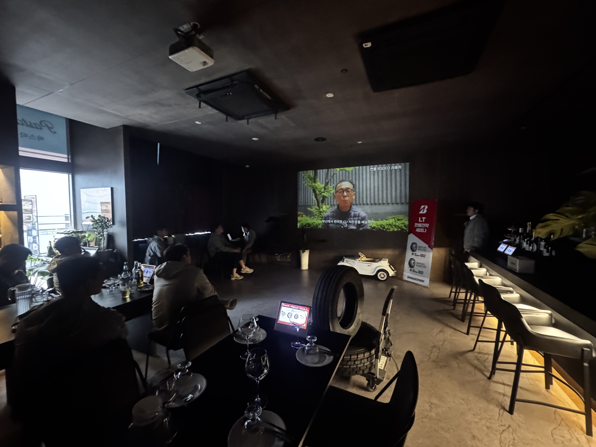

상용차 타이어,
이것만은 꼭!
타이어는 비용이 아니라 운영 효율입니다. 좋은 타이어 하나가 교체 주기, 연비, 운행 안정성까지 바꿉니다. RS002 / RD002는 특히 성능 유지가 중요한 고객에게 최적화된 선택입니다. “타이어 하나로 운영비를 줄인다”는 관점으로 제안해 보세요.
인천 세미나 성료 및 제주 방문 교육 세미나

지난 5월 19일, 인천에서 총 7분의 딜러 관계자분들이 참석해 주신 가운데 LTR 판매 전략 세미나가 진행되었습니다.
시장 가격의 관리, 재고 수급 안정화, 프로모션, 그리고 판매 전략의 일관성 등 현장에서 체감하시는 생생하고 다양한 의견들을 심도 있게 나눌 수 있었습니다. 특히 참석자분들께서 "이 정도 규모와 퀄리티의 세미나가 자주 있었으면 좋겠다"라고 적극적인 피드백을 남겨주셔 더욱 의미 깊은 자리였습니다.
.jpg)
이어 4차 일정으로는 제주도에 위치한 광덕상사를 직접 방문했습니다.
내륙 지방과는 확연히 다른 제주만의 고유한 지역적 상권 특성에 대해 깊이 있는 논의를 진행했으며, 본사 차원에서 특성에 맞춘 지원을 지속적으로 이어가기로 협의했습니다. 광덕상사 사장님께서도 LT 시장 공략에 적극적으로 참여하시겠다는 든든한 다짐을 전해주셨습니다.
RD/RS002 핵심 세일즈 포인트

안전과 경제성을 모두 잡은 완벽한 밸런스! 고객 설득 시 바로 활용할 수 있는 핵심 세일즈 포인트입니다.
안전 측면에서는 고른 타이어 마모로 오래 유지되는 주행 안정성을, 경제적 측면에서는 편마모 감소에 따른 긴 교체 주기와 압도적인 유지비(TCO) 절감을 적극 어필하십시오. 장거리 기사님들의 비용 부담을 덜어주는 최고의 솔루션입니다.
타이어 권장 소비자 가격표 안내

브리지스톤 LT 주요 모델의 권장 소비자 가격표입니다. 투명하고 합리적인 기준 가격을 통해 시장 가격을 관리하고 수익 안정화를 도모하시기 바랍니다.
- ✔ 적용 제품: R-STEER 002 / R-DRIVE 002
- ✔ 규격: 205/75R/17.5 ~ 225/75R/17.5
상용차 업계 최신 동향
안전은 투자, 방치는 손실…“화물차 예방 정비는 안전이자 수익”
타이어와 브레이크 등 소모품의 철저한 예방 정비가 단순한 비용 지출이 아니라, 차량의 기동 불능을 막고 궁극적인 수익을 지키는 생존 전략임을 강조합니다.
국토부, 화물차 가변축 정기점검 의무화...12월부터 단계적 시행
대형 화물차의 바퀴 이탈 사고를 막기 위해, 가변축이 설치된 대형 화물·특수차를 대상으로 연 1회 이상의 분해 및 정기점검을 의무화하는 제도가 도입됩니다.
작년 트레일러 시장 판매 9.4% 감소…안전운임제로 회복 기대
경기 침체로 국내 트레일러 판매가 위축되었으나, 최근 수출입 컨테이너·시멘트 안전위탁운임 인상으로 운송업계의 구매 여력과 장비 교체 수요가 점진적으로 회복될 전망입니다.
국토부, 화물차 공영차고지 확충에 고속도로 유휴부지 적극 활용
도심 내 불법주차 해소를 위해 고속도로 유휴부지를 활용, 차고지 부지 확보 부담을 줄이고 조성 기간을 1년 이내로 대폭 단축하는 시범사업을 추진합니다.
장마철 빗길, 안전이 최우선입니다!
덥고 습한 장마철, 현장에서 타이어 점검하시느라 땀방울 흘리시는 사장님들 고생 많으십니다. 노면이 미끄러운 비 오는 날씨일수록 고객들에게 접지력이 우수한 신품 교체를 꼼꼼히 챙겨주시고, 무엇보다 사장님들의 매장 작업 시 안전사고 없도록 유의하시길 바랍니다!
본사는 언제나 현장의 소리에 귀 기울이겠습니다. 대리점 사장님들의 든든한 바람막이가 되어 동반 성장할 수 있도록 앞장서겠습니다.